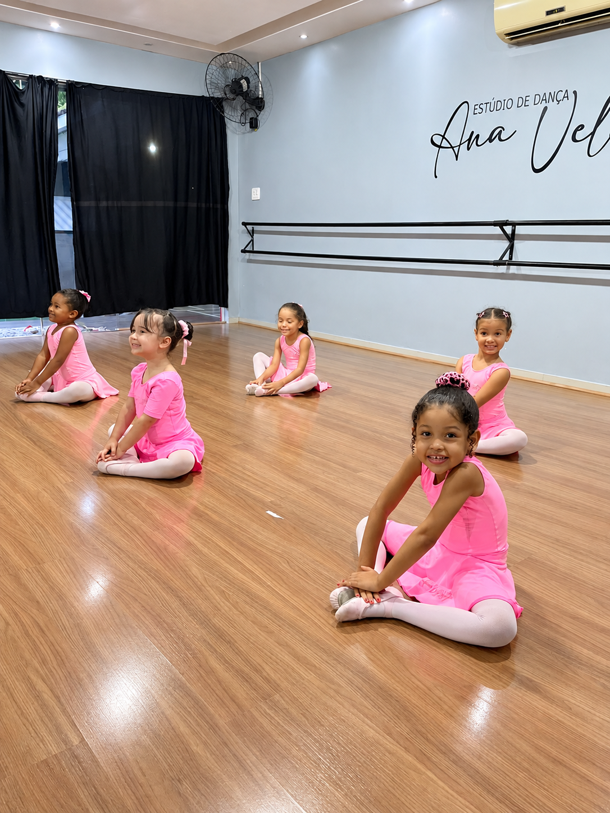
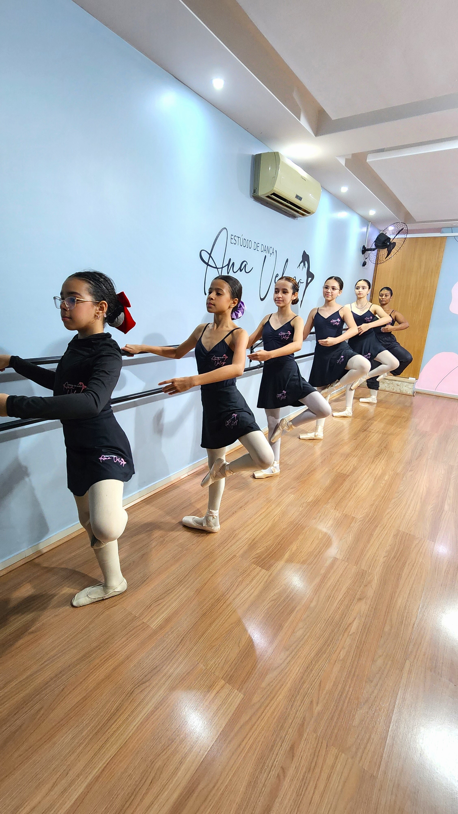
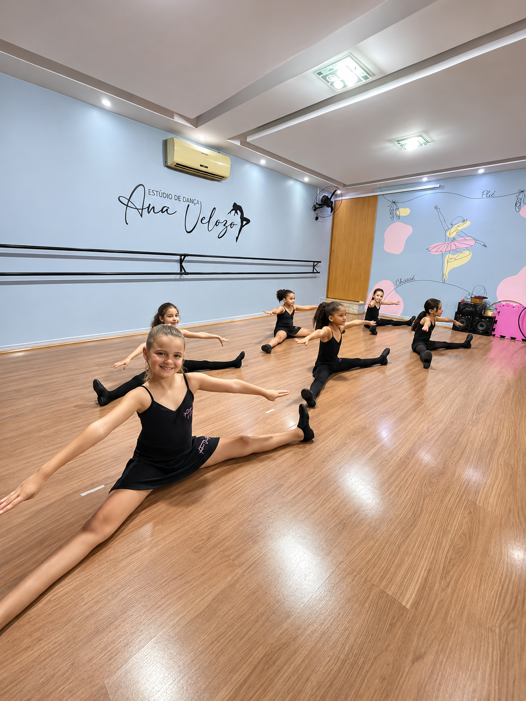
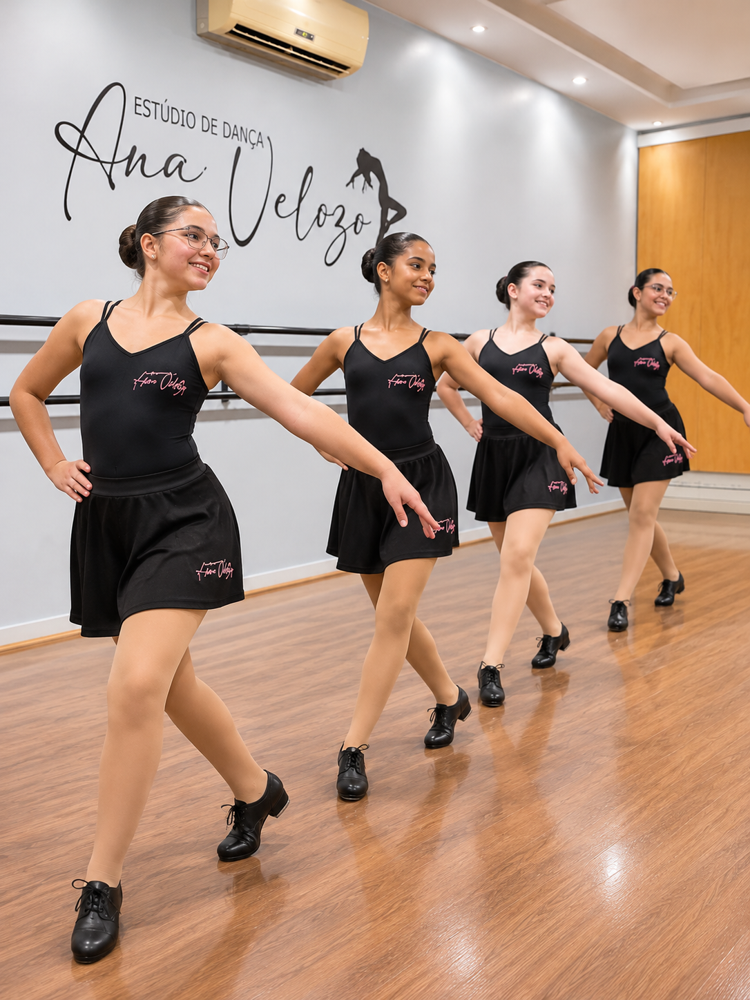
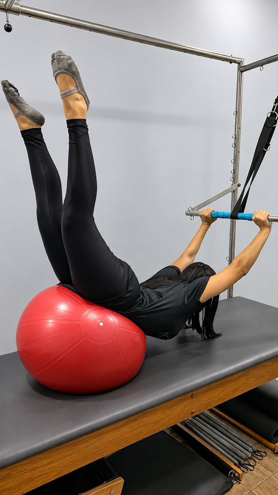
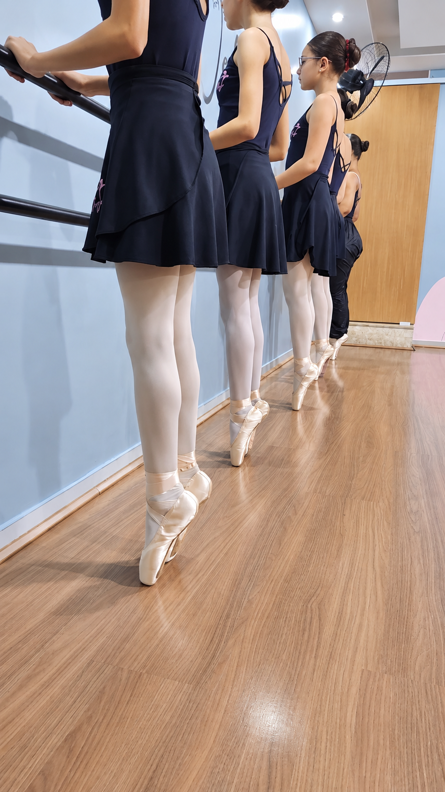
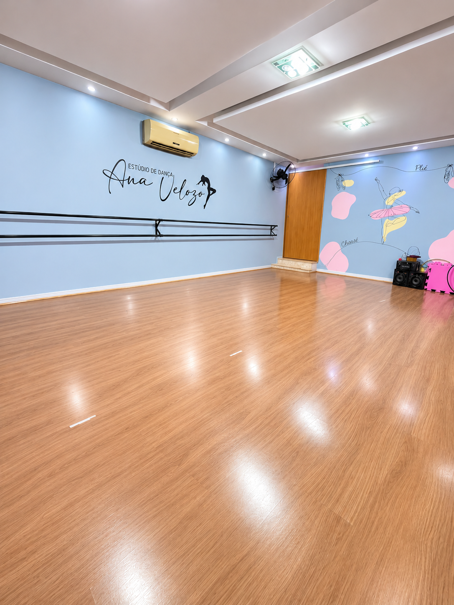
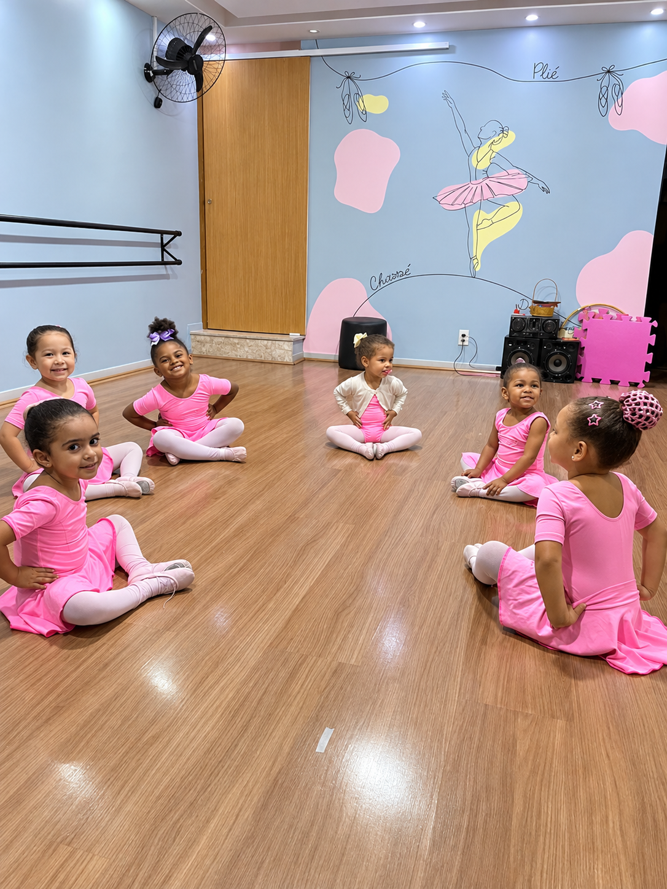
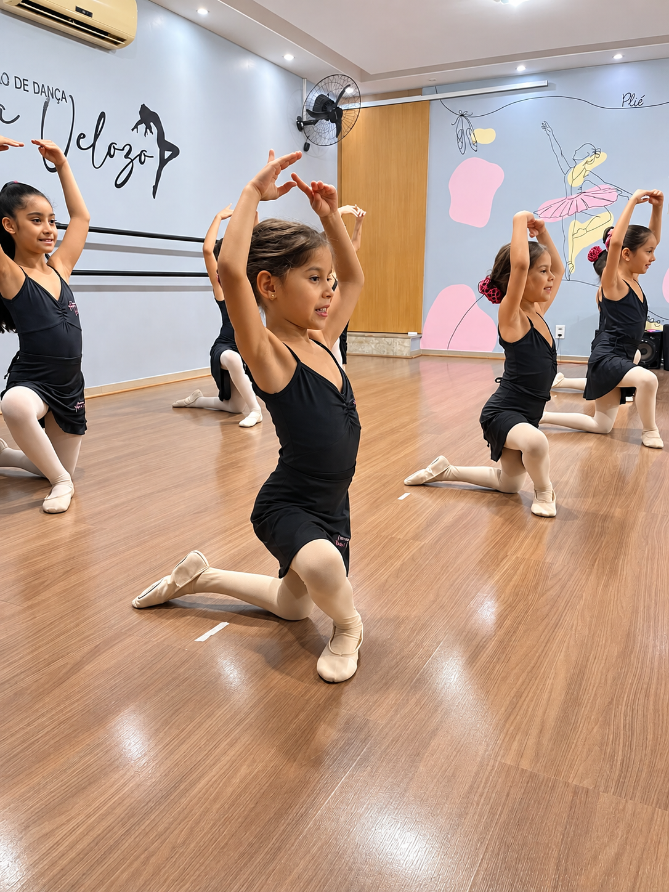

Ballet Infantil
Baby Class
Uma porta de entrada para a dança, em aulas pensadas para despertar o gosto pelo movimento com leveza e diversão.

No Estúdio de Dança Ana Velozo, crianças, adolescentes e adultos encontram aulas de Baby Class, Ballet Clássico, Jazz, Sapateado e Pilates em um ambiente acolhedor, com ensino conduzido com dedicação e alegria.
O estúdio oferece cinco modalidades para quem quer dançar ou movimentar o corpo com orientação, acolhimento e alegria. Escolha por onde começar.

Ballet Infantil
Uma porta de entrada para a dança, em aulas pensadas para despertar o gosto pelo movimento com leveza e diversão.

Técnica & delicadeza
Uma das bases da dança, ensinada com atenção, preparo e respeito ao ritmo de cada aluno.
Conhecer Ballet Clássico
Movimento & expressão
Uma modalidade para quem gosta de movimento e expressão, em aulas que valorizam o prazer de dançar.
Conhecer Jazz
O corpo vira música
Uma dança que une ritmo e movimento, para aprender com orientação atenta e muita animação.
Conhecer Sapateado
Presença & cuidado
Uma prática de movimento voltada ao cuidado com o corpo, com orientação responsável e atenção a cada aluno.
Conhecer PilatesO estúdio recebe alunos de diferentes fases da vida. Algumas modalidades podem ser mais indicadas para determinado público, e você pode conversar com a gente para saber qual aula combina melhor com cada pessoa.
Um espaço para brincar, descobrir o movimento e aprender no próprio ritmo, com acolhimento e sem comparações.
Um ambiente para aprender, se expressar e conviver com leveza, em um estúdio que valoriza a individualidade de cada aluno.
Uma oportunidade de começar ou retomar o contato com o movimento, sem pressa e com orientação cuidadosa.
Dançar é prazer. As aulas são leves e divertidas, para que cada aluno goste de estar no estúdio e de aprender.
Cada aluno tem o seu ritmo. Reconhecemos as individualidades e celebramos cada conquista, sem comparações.
As aulas são preparadas com cuidado e há compromisso com o desenvolvimento de cada aluno ao longo do caminho. Esse cuidado vale para todas as modalidades e para todas as idades.

O movimento começa aqui.O Estúdio de Dança Ana Velozo é guiado pelo amor pela dança e pela vontade de receber bem cada aluno. Aqui, dançar é uma experiência de prazer, desenvolvimento e autoestima, vivida em um ambiente familiar, humano e receptivo.
À frente do estúdio está Ana Paula Velozo, que reúne 20 anos de experiência na área da educação. Esse olhar de educadora está presente no cuidado com as aulas e no compromisso com cada aluno, do primeiro dia em diante.
Se você procura uma escola de dança em Campo Grande, RJ, para você ou para seus filhos, será um prazer receber sua visita.
Conhecer o estúdioVer o ambiente ajuda a escolher com mais tranquilidade. Veja fotos reais do espaço para aulas de dança e de momentos das turmas, e conheça um pouco do dia a dia do estúdio. Na aula experimental, você conhece tudo de perto.



Ouvir quem vive a rotina do estúdio é uma boa forma de conhecer o nosso trabalho. Aqui você encontra relatos de alunos e de responsáveis sobre a experiência nas aulas.
Um lugar incrível e total acolhedor! Profissionais super capacitados, aparelhos em ótimo estado e as aulas são as melhores!
Ambiente agradável, professoras capacitadas e atenciosas, minha filha ama as aulas! Vale a pena marcar uma aula experimental!
Amei conhecer… estúdio lindo e aconchegante e alegre, com profissionais maravilhosos e receptivos
Muitas atividades apaixonei por todas, super indico!
Conheça os primeiros artigos do estúdio sobre ballet infantil e como se preparar para a primeira aula de Pilates.
Conheça os artigosVenha conhecer de perto o espaço, as aulas e o jeito acolhedor do Estúdio de Dança Ana Velozo. Estamos em Campo Grande, no Rio de Janeiro, e será um prazer receber você.
Estr. João Melo, 10, Campo Grande,Antes de vir, fale com a gente pelo WhatsApp para tirar dúvidas e combinar sua visita ou sua aula experimental.
Se você procura aulas de dança em Campo Grande, RJ, para você, seu filho ou sua filha, a aula experimental gratuita é um jeito simples de conhecer o estúdio, o ambiente e a modalidade que desperta seu interesse. Sem pressão, no seu tempo.
Agendar minha aula experimental gratuitaFale com a gente pelo WhatsApp e tire suas dúvidas.